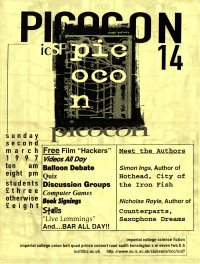

Picocon 14
|  |
| ||||||||||||||||||||||
Simon Ings Simon Ings was born in Hoprndean about 30 years ago. He has written several books including Hot Head, Hotwire and City of the Iron Fish. |
Nicholas Royle Nicholas Royle was born in Sale in 1963. He has written two books, Counterparts and Saxophone Dreams, and also compiled several anthologies. |
| Previous page | Contents | Next Page |